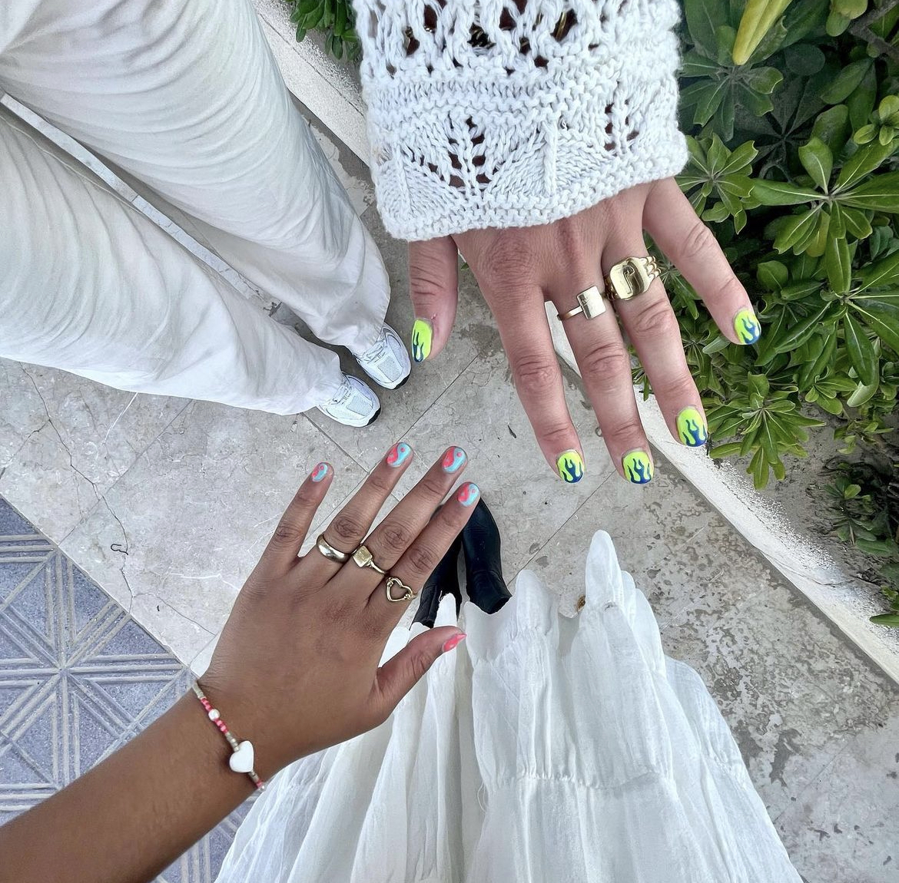
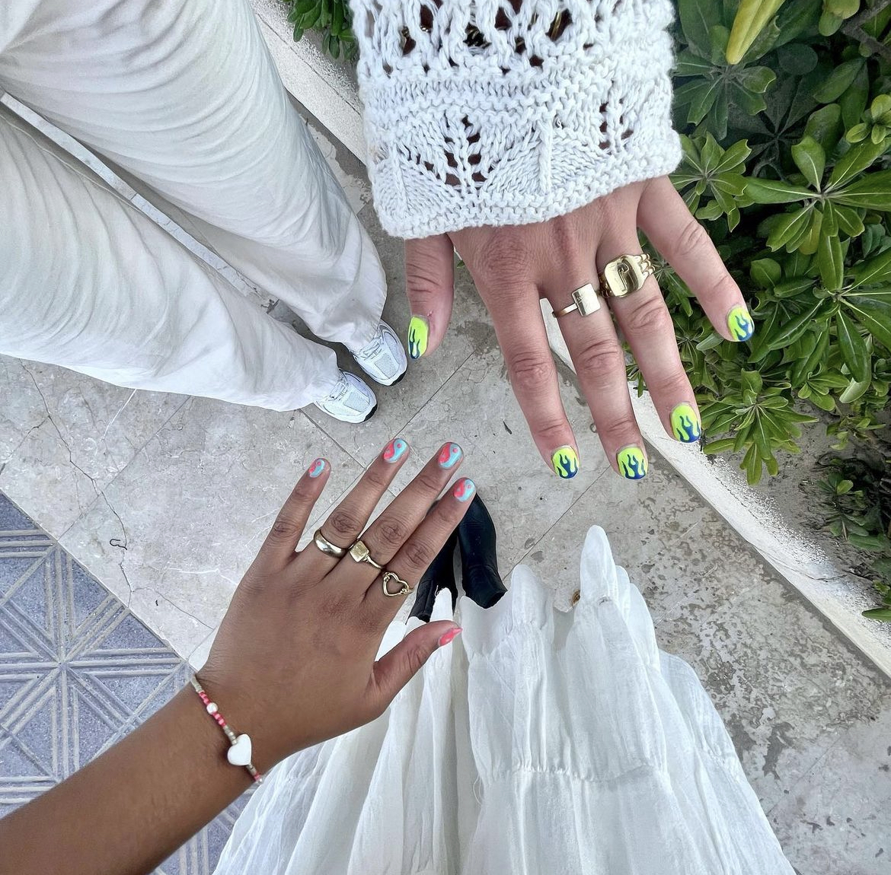

ARTGELLAC LEVELS
Hier zie je level 2 van Artgellac. Een vlammetje is het perfecte voorbeeld voor Artgellac level 2, vaak word hier gebruik gemaakt van maximaal twee kleuren en een simpel design.
TOP 3 VAN DE WEEK

 

PEPER NAILS
Neavy blue met een klein pepertje op de ringvinger, een perfecte combi voor de zomer! Deze week hebben al 4 klanten deze mooie nagels gekozen dat maakt deze set nummer 1 van de week.
FRENCH
French komt weer terug! French met een leuke twist door de kleur Preal als basis te gebruiken samen met een neon groene frech. Super leuk en kan met alle kleurtjes.
VLAM + YINYAN
Zo zijn jullie het perfecte duo! Super leuke combinatie van de classic vlammetjes en het YinYan symbool. Perfect voor jou en je BFF!
TRENDS
Wil jij alles weten over de nieuwe trends binnen de nagel wereld? Klik hier en vind alles wat je moet weten over de nieuwe trends!